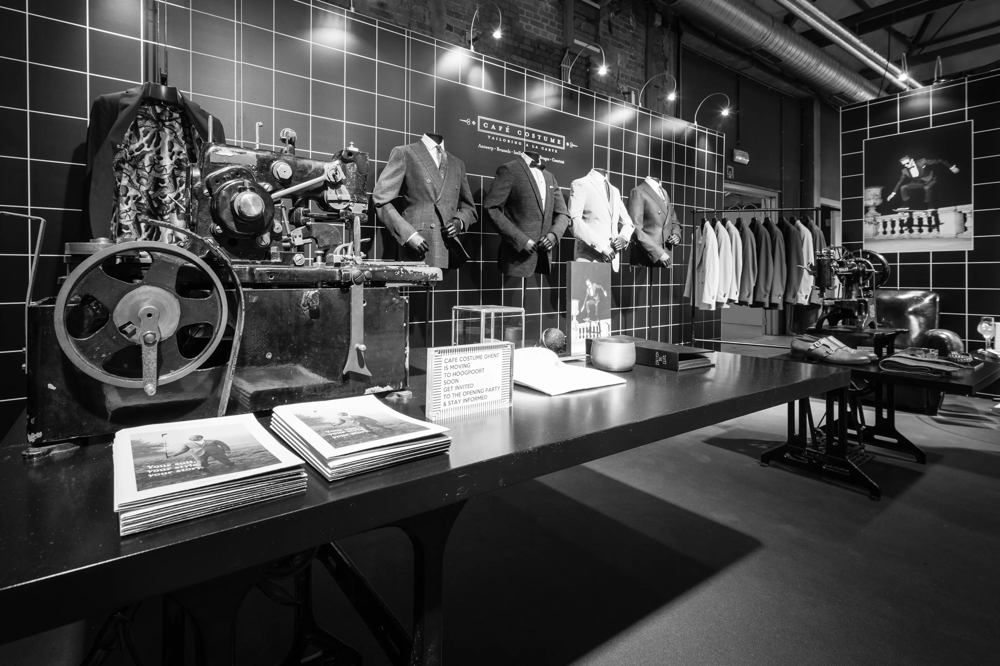
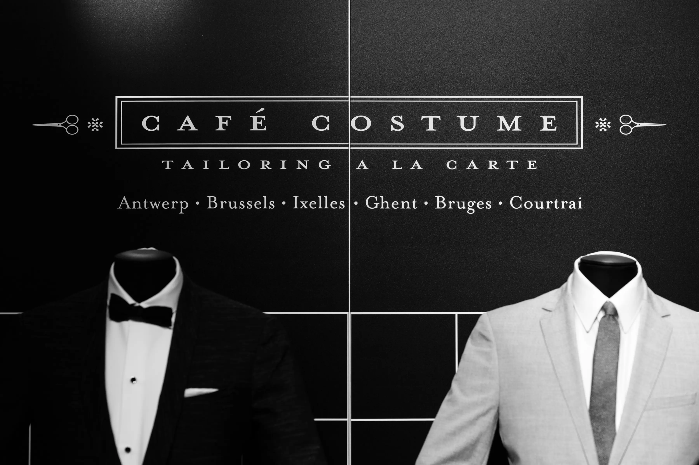
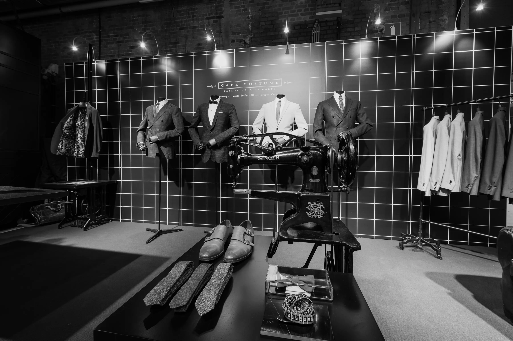

Café Costume Booth 2017
Booth Concept for 2017
Booth Concept for 2017
About the case
Glossy Branding Agency joined forces with the Café Costume team to embark on a journey of modernizing their brand. Drawing inspiration from the rich heritage of European textile ateliers, we delved into the history of the garments industry. Tiles, a prevalent element in textile factories, became a focal point in our design approach, symbolizing the deep-rooted heritage of the brand.
By incorporating this element into the new visual identity, Glossy Branding Agency successfully infused Café Costume with a touch of modernism while paying homage to its historical roots. This exciting collaboration sets the stage for even more innovative and forward-thinking initiatives from Café Costume in the future. Stay tuned for the evolution of Café Costume's modern aesthetic!
Pictures ©2017 jornurbain.com


